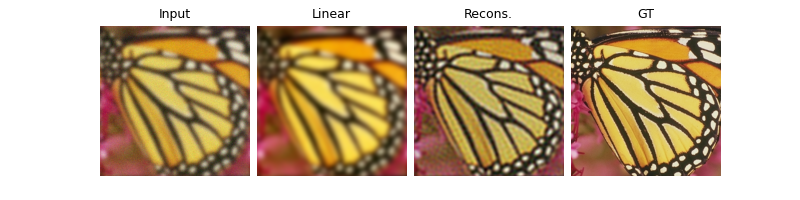

Note
Go to the end to download the full example code
Image deblurring with custom deep explicit prior.
In this example, we show how to solve a deblurring inverse problem using an explicit prior.
Here we use the simple L2 prior that penalizes the squared norm of the reconstruction, with an ADMM algorithm.
import deepinv as dinv
from pathlib import Path
import torch
from torch.utils.data import DataLoader
from deepinv.optim.prior import Prior
from deepinv.optim.data_fidelity import L2
from deepinv.optim.optimizers import optim_builder
from deepinv.training_utils import test
from torchvision import transforms
from deepinv.utils.demo import load_dataset
Setup paths for data loading and results.
# Setup paths for data loading, results and checkpoints.
BASE_DIR = Path(".")
ORIGINAL_DATA_DIR = BASE_DIR / "datasets"
DATA_DIR = BASE_DIR / "measurements"
RESULTS_DIR = BASE_DIR / "results"
DEG_DIR = BASE_DIR / "degradations"
# Set the global random seed from pytorch to ensure reproducibility of the example.
torch.manual_seed(0)
device = dinv.utils.get_freer_gpu() if torch.cuda.is_available() else "cpu"
Load base image datasets and degradation operators.
In this example, we use the CBSD68 dataset from the paper of Zhang et al. (2017) and the motion blur kernels from Levin et al. (2009).
# Set up the variable to fetch dataset and operators.
method = "L2_prior"
dataset_name = "set3c"
operation = "deblur"
img_size = 256
dataset_path = ORIGINAL_DATA_DIR / dataset_name
val_transform = transforms.Compose(
[transforms.CenterCrop(img_size), transforms.ToTensor()]
)
dataset = load_dataset(dataset_name, ORIGINAL_DATA_DIR, transform=val_transform)
Define physics operator
We use the deepinv.physics.BlurFFT operator from the physics module to generate a dataset of blurred images.
The BlurFFT class performs the convolutions via the Fourier transform.
In this example, we choose a gaussian kernel with standard deviation 3, and we add a Gaussian noise with standard deviation 0.03.
# Generate a Gaussian blur filter.
filter_torch = dinv.physics.blur.gaussian_blur(sigma=(3, 3))
noise_level_img = 0.03 # Gaussian Noise standard deviation for the degradation
n_channels = 3 # 3 for color images, 1 for gray-scale images
# The BlurFFT instance from physics enables to compute efficently backward operators with Fourier transform.
p = dinv.physics.BlurFFT(
img_size=(n_channels, img_size, img_size),
filter=filter_torch,
device=device,
noise_model=dinv.physics.GaussianNoise(sigma=noise_level_img),
)
Generate a dataset of blurred images
# Use parallel dataloader if using a GPU to fasten training, otherwise, as all computes are on CPU, use synchronous
# data loading.
num_workers = 4 if torch.cuda.is_available() else 0
n_images_max = 3 # Maximal number of images to restore from the input dataset
measurement_dir = DATA_DIR / dataset_name / operation
deepinv_dataset_path = dinv.datasets.generate_dataset(
train_dataset=dataset,
test_dataset=None,
physics=p,
device=device,
save_dir=measurement_dir,
train_datapoints=n_images_max,
num_workers=num_workers,
)
Computing train measurement vectors from base dataset...
0%| | 0/2 [00:00<?, ?it/s]
100%|██████████| 2/2 [00:00<00:00, 47.27it/s]
Dataset has been saved in measurements/set3c/deblur
Set up the optimization algorithm to solve the inverse problem.
We use the deepinv.optim.optimizers.optim_builder function to instantiate the optimization algorithm.
The optimization algorithm is a proximal gradient descent algorithm that solves the following optimization problem:
where \(A\) is the forward blurring operator, \(y\) is the measurement and \(\rho\) is a regularization parameter.
# Create a custom prior which inherits from the base Prior class.
class L2Prior(Prior):
def __init__(self, *args, **kwargs):
super().__init__(*args, **kwargs)
self.explicit_prior = True
def g(self, x, args, **kwargs):
g = 0.5 * torch.norm(x.view(x.shape[0], -1), p=2, dim=-1) ** 2
return g
# Specify the custom prior
prior = L2Prior()
# Select the data fidelity term
data_fidelity = L2()
# Specific parameters for restoration with the given prior (Note that these parameters have not been optimized here)
params_algo = {"stepsize": 1, "lambda": 0.1}
# Logging parameters
verbose = True
plot_metrics = True # compute performance and convergence metrics along the algorithm, curved saved in RESULTS_DIR
# Parameters of the algorithm to solve the inverse problem
early_stop = True # Stop algorithm when convergence criteria is reached
crit_conv = "cost" # Convergence is reached when the difference of cost function between consecutive iterates is
# smaller than thres_conv
thres_conv = 1e-5
backtracking = False # use backtraking to automatically adjust the stepsize
max_iter = 500 # Maximum number of iterations
# Instantiate the algorithm class to solve the IP problem.
model = optim_builder(
iteration="ADMM",
prior=prior,
g_first=False,
data_fidelity=data_fidelity,
params_algo=params_algo,
early_stop=early_stop,
max_iter=max_iter,
crit_conv=crit_conv,
thres_conv=thres_conv,
backtracking=backtracking,
verbose=verbose,
)
Evaluate the reconstruction algorithm on the problem.
We can use the deepinv.utils.test() function to evaluate the reconstruction algorithm on a test set.
batch_size = 1
wandb_vis = False # plot curves and images in Weight&Bias
plot_images = True # plot results
dataset = dinv.datasets.HDF5Dataset(path=deepinv_dataset_path, train=True)
dataloader = DataLoader(
dataset, batch_size=batch_size, num_workers=num_workers, shuffle=False
)
test(
model=model,
test_dataloader=dataloader,
physics=p,
device=device,
plot_images=plot_images,
save_folder=RESULTS_DIR / method / operation / dataset_name,
plot_metrics=plot_metrics,
verbose=verbose,
wandb_vis=wandb_vis,
)
- 
Processing data of operator 1 out of 1
0%| | 0/3 [00:00<?, ?it/s]
33%|███▎ | 1/3 [00:26<00:52, 26.21s/it]Iteration 36, current converge crit. = 2.77E-06, objective = 1.00E-05
67%|██████▋ | 2/3 [00:28<00:12, 12.14s/it]Iteration 45, current converge crit. = 1.07E-06, objective = 1.00E-05
100%|██████████| 3/3 [00:31<00:00, 7.83s/it]
100%|██████████| 3/3 [00:31<00:00, 10.40s/it]
Test PSNR: Linear rec.: 16.91+-2.29 dB | Model: 19.75+-2.26 dB.
(19.75107192993164, 2.2591548061178632, 16.9091952641805, 2.2942947546189876)
Total running time of the script: (0 minutes 31.828 seconds)